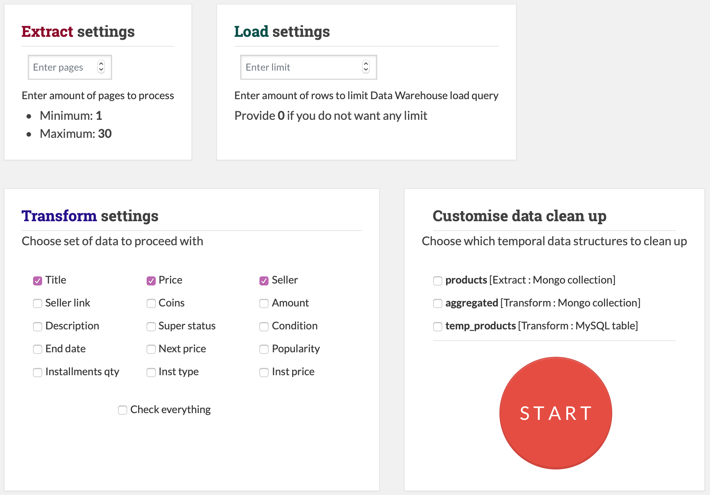
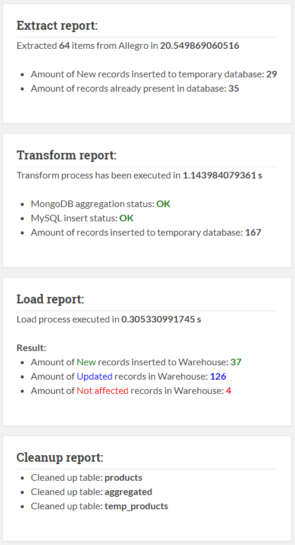
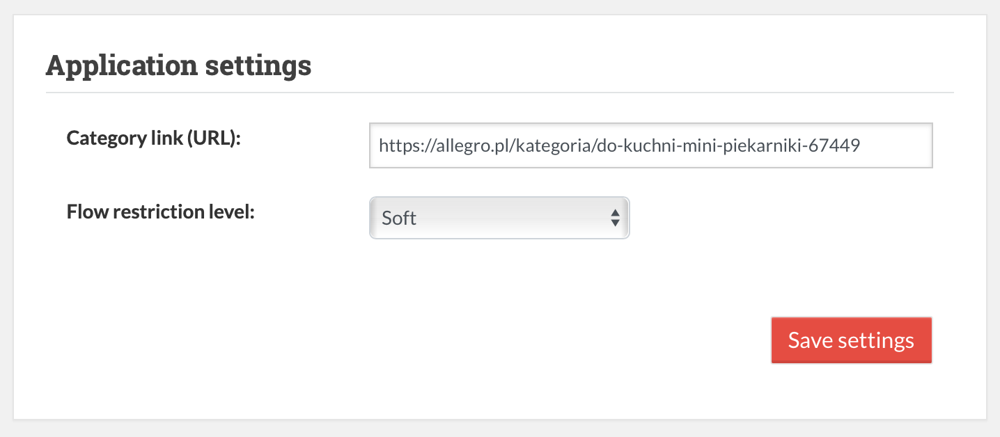
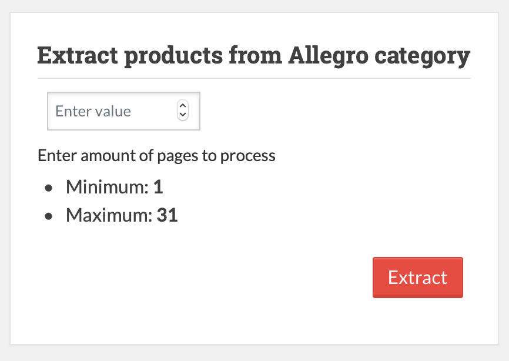
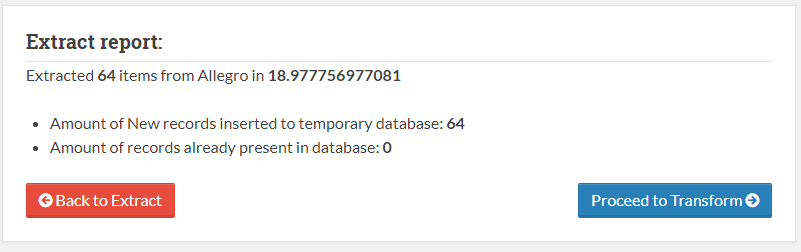
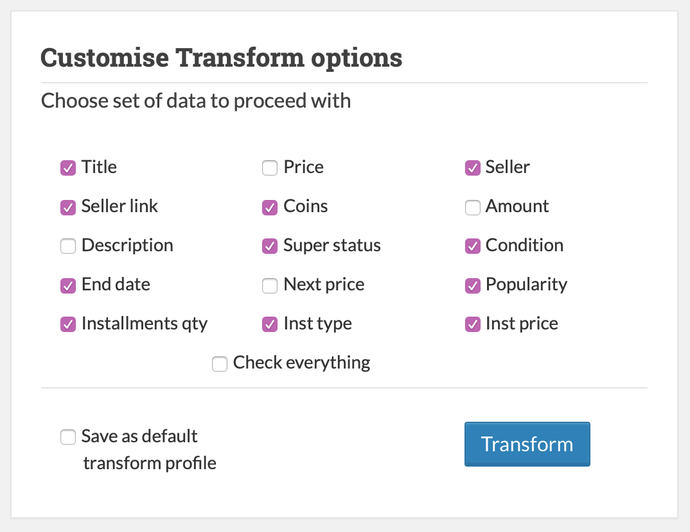
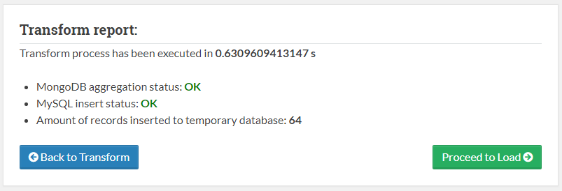
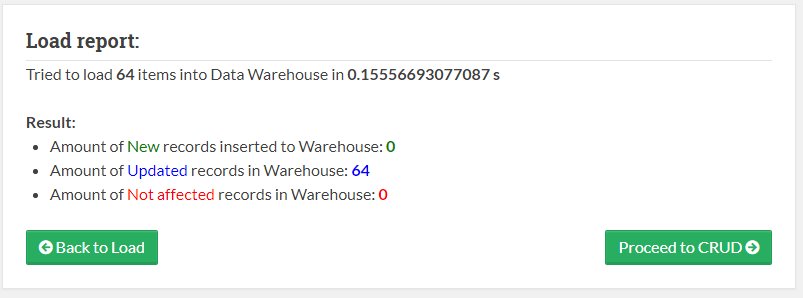
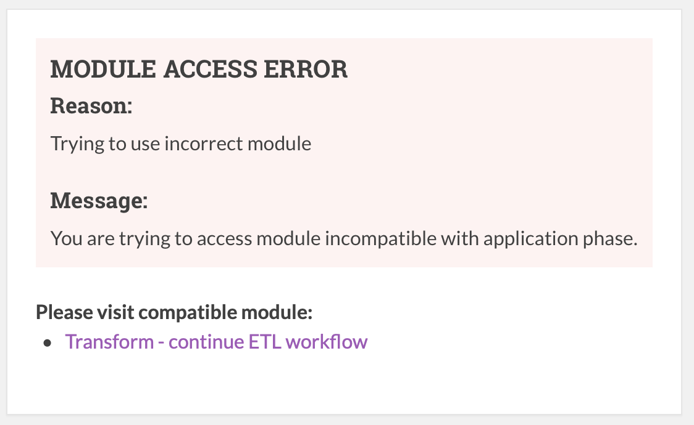

Application Views
Application views are grouped into 3 main categories:
- Templates
- Pages
- Errors
Templates
This category of views are used to build page from structural parts.
It consists of 5 template parts:
meta.phptopbar.phpsidebar.phpfooter.phpscript.php
The body of application page hast to be placed between sidebar and footer element of the template.
meta.php - this file contains header of the webpage and loads css files.
<?php
?>
<!DOCTYPE html>
<!--[if IE 8]><html class="no-js lt-ie9" lang="en" > <![endif]-->
<!--[if gt IE 8]><!--> <html class="no-js" lang="en" > <!--<![endif]-->
<head>
<meta charset="utf-8">
<meta http-equiv="X-UA-Compatible" content="IE=edge">
<meta name="viewport" content="width=device-width, initial-scale=1.0">
<meta name="description" content="UEK CI Documentation">
<meta name="author" content="Viacheslav Babanin">
<?=link_tag('img/afav.png', $rel="shortcut icon", $type='')?>
<title>Exstract Transform Load</title>
<?=link_tag('css/bootstrap.min.css')?>
<?=link_tag('css/jquery-ui.min.css')?>
<link href='https://fonts.googleapis.com/css?family=Lato:400,700|Roboto+Slab:400,700|Inconsolata:400,700' rel='stylesheet' type='text/css'>
<link href='https://maxcdn.bootstrapcdn.com/font-awesome/4.7.0/css/font-awesome.min.css' rel='stylesheet' type='text/css'>
<?=link_tag('css/theme.css')?>
<?=link_tag('css/theme_extra.css')?>
<?=link_tag('css/highlight.css')?>
<?=link_tag('css/uek.css')?>
<?=link_tag('css/jquery.json-viewer.css')?>
<?=link_tag('css/jquery-confirm.min.css')?>
</head>
<body class="wy-body-for-nav" role="document">
<div class="wy-grid-for-nav">
topbar.php - this file contains html code which is responsible for top-bar navigation menu.
<section data-toggle="wy-nav-shift" class="wy-nav-content-wrap">
<div id="adminbar">
<ul class="button-left">
<li onclick="location.href='<?=base_url('home')?>';"><i class="fa fa-home"></i> Home</a></li>
</ul>
<ul class="button-left">
<li onclick="location.href='<?=base_url('settings')?>';"><i class="fa fa-cogs"></i> Settings</a></li>
</ul>
<ul class="button-left">
<li onclick="location.href='<?=base_url('docs')?>';"><i class="fa fa-book"></i> Documentation</a></li>
</ul>
</div>
<nav class="wy-nav-top" role="navigation" aria-label="top navigation">
<i data-toggle="wy-nav-top" class="fa fa-bars"></i>
<a href=".">Admin Panel Centrum Informatyki</a>
</nav>
<div class="wy-nav-content">
<div class="rst-content">
<div role="main">
<div class="section">
sidebar.php - this file contains html code which is responsible for side-bar module navigation menu.
<nav data-toggle="wy-nav-shift" class="wy-nav-side stickynav">
<div class="wy-side-nav-search">
<a href="." class="icon icon-home"> Extract Transform Load</a>
</div>
<div class="wy-menu wy-menu-vertical" data-spy="affix" role="navigation" aria-label="main navigation">
<ul class="<?=$current==='extract' ? 'current' : ''?>">
<li class="toctree-l1 <?=$current==='extract' ? 'current' : ''?>">
<a class="<?=$current==='extract' ? 'current' : ''?>" href="<?=base_url()?>extract">Extract</a>
</li>
</ul>
<ul class="<?=$current==='transform' ? 'current' : ''?>">
<li class="toctree-l1 <?=$current==='transform' ? 'current blue' : ''?>">
<a class="<?=$current==='transform' ? 'current blue' : ''?>" href="<?=base_url()?>transform">Transform</a>
</li></ul>
<ul class="<?=$current==='load' ? 'current' : ''?>">
<li class="toctree-l1 <?=$current==='load' ? 'current green' : ''?>">
<a class="<?=$current==='load' ? 'current green' : ''?>" href="<?=base_url()?>load">Load</a>
</li></ul>
<ul class="<?=$current==='crudhome' ? 'current' : ''?>">
<li class="toctree-l1 <?=$current==='crudhome' ? 'current' : ''?>">
<a class="<?=$current==='crudhome' ? 'current' : ''?>" href="<?=base_url()?>crudhome">Monitor DB</a>
<ul class="current subnav">
<li class="toctree-l2 toc-item <?=$toccurrent==='mongo/products' ? 'toc-current' : ''?>">
<a href="<?php echo base_url();?>mongo/products" title="Extract Mongo CRUD">E: Mongo</a>
</li>
<li class="toctree-l2 toc-item <?=$toccurrent==='mongo/aggregated' ? 'toc-current' : ''?>">
<a href="<?php echo base_url();?>mongo/aggregated" title="Transform Mongo CRUD">T: Mongo</a>
</li>
<li class="toctree-l2 toc-item <?=$toccurrent==='sql/temp_products' ? 'toc-current' : ''?>">
<a href="<?php echo base_url();?>sql/temp_products" title="Transform SQL CRUD">T: SQL</a>
</li>
<li class="toctree-l2 toc-item <?=$toccurrent==='sql/products' ? 'toc-current' : ''?>">
<a href="<?php echo base_url();?>sql/products" title="Load SQL CRUD">L: SQL</a>
</li>
</ul>
</li></ul>
</div>
</nav>
footer.php - this file contains footer message as well as closing tags for elements and containers which were opened in upper templates.
</div>
</div>
<footer>
<hr/>
<div role="contentinfo">
<!-- Copyright etc -->
<p>© 2018 Viacheslav Babanin Uniwersytet Ekonomiczny w Krakowie</p>
</div>
</footer>
</div>
</div>
</section>
</div>
<div class="rst-versions" role="note" style="cursor: pointer">
<span class="rst-current-version" data-toggle="rst-current-version">
</span>
</div>
script.php - contains closing tags and javascript scripts. Detailed explanation is in Frontend chapter of this documentation
Pages
This category of views contains web-pages which are part of the application. The file structure is as follows:
- pages
- crud
crudhome.phpmongocrud.phpsqlcrud.php
- extract
extract_app.phpextract_result.php
- load
load_app.phpload_result.php
- transform
transform_app.phptransform_result.php
home.phphome_result.phpsettings.php
- crud
General structure of each page is that consists form one or more <div class="app"></div> elements which represent application windows on white background.
Home
Home page consists of two html files: home.php and home_result.php.
home.php- contains application windows for ETL process. home_result.php- displays ETL process report for the user. 
Settings
settings.php- file which contains html elements responsible for user interaction with current global application settings. 
Extract
Extract module page is generated by two html files extract_app.php and extract_result.php.
extract_app.php- displays Extract process configuration application window. extract_result.php- displays Extract report. 
Transform
Extract module page is generated by two html files extract_app.php and extract_result.php.
transform_app.php- displays Transform process configuration application window. transform_result.php- displays Extract report. 
Load
Extract module page is generated by two html files extract_app.php and extract_result.php.
load_app.php- displays Extract process configuration application window.
load_result.php- displays Extract report. 
Crud
Crud module consists of 3 views:
crudhome.php- index page of a module which explains what kind of data is presented on subpages.mongocrud.php- dynamic view which presents content of MongoDB collection, both MongoDB Crud pages are generated using this view.sqlcrud.php- dynamic view which presents content of SQL table, both SQL Crud pages are generated using this view.
Errors
This category of views consists of views which process and present user-friendly, human readable php errors.
Most of them are part of CodeIgniter framework except one, which generates error message due to invalid module access:

error_wrongphase.php
<div class="windows">
<div class='app'>
<div class="error"><h1>MODULE ACCESS ERROR</h1>
<h4>Reason: </h4>
<p>
Trying to use incorrect module
</p>
<h4>Message:</h4>
<p>
You are trying to access module incompatible with application phase.
</p>
</div>
<span><b>Please visit compatible module:</b></span>
<ul>
<?php if ($phase == 'extract'):?>
<li><a href="<?=base_url()?>extract">Extract - start ETL from here</a></li>
<?php elseif ($phase == 'transform'):?>
<li><a href="<?=base_url()?>transform">Transform - continue ETL workflow</a></li>
<?php elseif ($phase == 'load'):?>
<li><a href="<?=base_url()?>load">Load - finish ETL workflow</a></li>
<?php endif;?>
</ul>
</div>
This view presents user with a message which differs according to current application page.